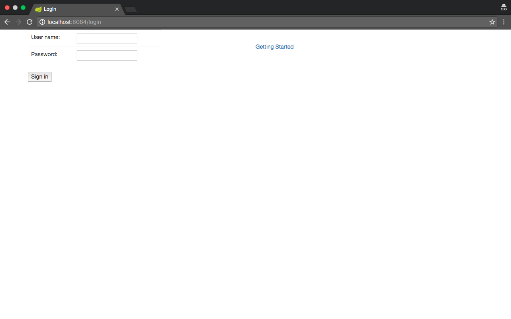
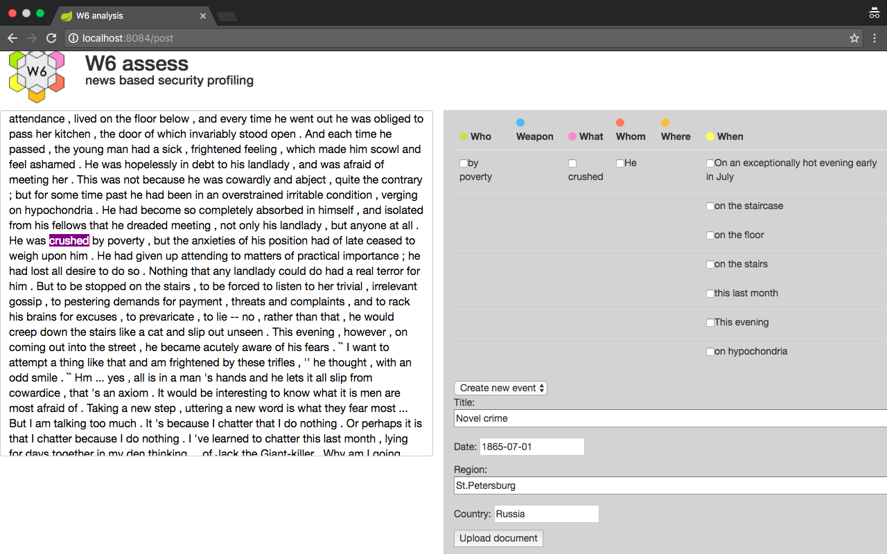
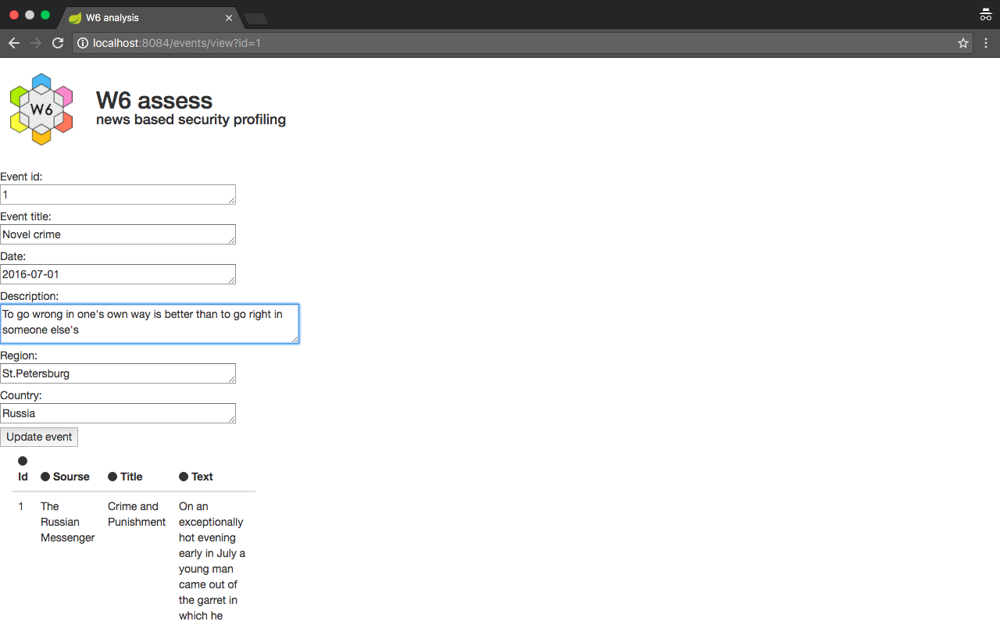

W6 assess
news based security profiling
Getting started
Authentication
The first page of W6 site is authentication page. There you have to enter user name and password and click the Sign in button to proceed to use W6 site functionality according to your authorization.
At the authentication page any user has ability to read short Getting started tutorial using Getting started link at the right part of page.
Input
After authentication you get the input page where you could enter your article with source and title in the corresponding fields. Click the Upload document button to parse the article and get result.
To get input page again you should follow the next format of link:
<host>:<port>/input
After parsing
After parsing your article you get the page with parsing result. At the left part of result page you see the article's text that was input earlier. At the right part of result page you see the parsing result. It's presented by table with six columns (Who, Weapon, What, Whom, Where, When). Each column contains information that was obtained during parsing.
To get the page with parsing result again you should follow the next format of link:
<host>:<port>/parse?id=<id>
Event creation
After parsing article you are able to create an event filling all fields on the page with parsing result. Then click the Upload document button.
Articles view
After creating the event you get the view page with all parsed articles with their parsing results.
To get the page with all parsed articles again you should follow the next format of link:
<host>:<port>/view
Event view
You can get the event page by event's id to update existing event.
To get the event page you should follow the next format of link:
<host>:<port>/events/view?&id=<event_id>
Let's update this event with changing description and date to the current year (at creating this tutorial moment that was 2016). Click the Update event button.
Report
To get report for all events for specified month you should follow the next format of link:
<host>:<port>/report?month=MM